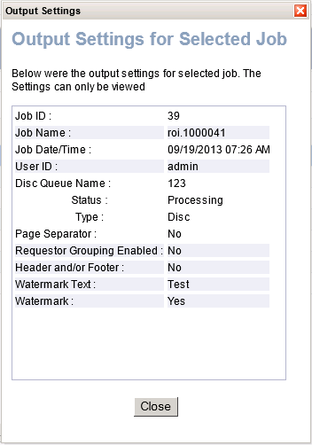

Buttons related to jobs
The following buttons act on the Jobs grid on both tabs. You may need to scroll the window down to bring these buttons into view. The system enables only those you have permission to use.
Resubmit
Resubmits a job to the same output type as originally requested.
Enabled only if you select a single job that has a status of Paused,
Failed, or Completed.
Pause
Suspends processing for one or more jobs you select.
Jobs in a completed or failed state cannot be paused.
Disabled when you select even one job that cannot be paused.
Resume
Continues processing for one or more jobs you select.
Only jobs in a paused state can be resumed.
Disabled when you select even one job that cannot be resumed.
Cancel
Cancels (that is, discards) one or more jobs you select.
Jobs in a completed or failed state cannot be cancelled.
Disabled when you select even one job that cannot be cancelled.
View Output Settings
Allows you to view the output settings for a job you select.
Disabled if you select more than one job.
Launches the Output Settings for Selected Job
dialog box, which displays all settings for the output type in read-only
mode.

Refresh
Refreshes the job list with updated information, based on currently
selected criteria.
Automatically refreshes every 60 seconds and after every queue event.